1954
Världen: Morris Tanenbaum vid Bell Laboratories USA var 1954 en av de första att utveckla en fungerande transistor baserad på kisel, något som framåt slutet på 1960-talet kom att bli det vanligaste materialet.
1954 9 feb. Hans 34:års födelsedag firas i Tae Gu tillsammans med 20 medlemmar.
Anthony Borgia publicerar ny bok om andliga världen: LIFE IN THE WORLD UNSEEN (1954)
Dr Samuels mottog under perioden 1954-1966, ett antal
meddelanden från Jesus
som fortsättning på
James Padgetts arbete 1914-1920.
Kommentar: 1954 grundades HSA-UWC
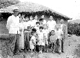 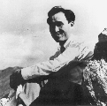 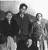


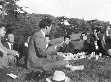 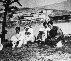 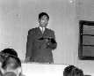 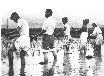 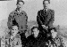


Bilder från ca.1954
1 maj Holy Spirit Association for The Unification of World Christianity - HSAUWC etableras officiellt i Seoul.
Kommentar: Jesus dog 33 år gammal. Att SMM överlevde sitt 33:e år var providentiellt...
som att passera korsdöden och fortsätta Jesu mission förbi korset...
Om Jesus levat till 34 år hade han inte behövt dö på korset.
även Koreakriget upphörde efter 3 år, 1950-1953. Providentiell påverkan!.
Intressanta andliga paralleller 1954:

Billy Graham håller kristna mass-väckelsemöte i London i maj 1954 som samlade 2 miljoner människor.
Före 1954 hade endast en amerikansk evangelist skapat en liknande väckelse-känsla i England, Dwight Moody (för
hundra är sedan).
Detta väckelse-korståg översvämmade Englands kyrkor - spreds samtidigt via live telefon över England.
Sagan om ringen eller Härskarringen, i nyöversättning Ringarnas herre (originaltitel The Lord of the Rings), är
en fantasiroman av
J.R.R. Tolkien.
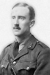
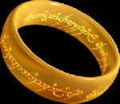
Den utgavs på engelska för första gången 1954-1955 uppdelad i tre volymer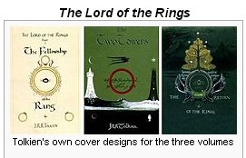
med titlarna The Fellowship of the Ring, The Two Towers och The Return of the King (=Messias). Tolkien hade redan 1937 (1935 tog SMM emot sin mission av Jesus) i Bilbo, en hobbits äventyr, introducerat både hörskarringen, och flera av huvudfigurerna i trilogin. Idéen om en hörskarring som kan avgöra världens framtid (= Välsignelsen genom Sanna Föräldrar, Messias)förekommer även i Richard Wagners fyra operor om Nibelungens ring. Båda författarna har lätit sig inspireras av samma gamla sagor, bl.a. Völsungasagan och Eddan.
I mitten av 60-talet hade novellerna blivit ett kulturellt fenomen. (Sanna föräldrars Heliga Välsignelse 1960) /Ref Wikipedia, mina Kommentarer inom parentes
Den 17 maj 1954 meddelade USA:s högsta domstolsdomare den enhälliga domen i medborgarrättsfallet som blev ett
landmärke. -
Ingen mer tillåten skolsegregation.
18 okt. Professorer från Ehwa kvinnliga universitet lyssnar till föredrag i fröken Yang:s hus och de blir medlemmar.
21 dec. Seiwa kristna ungdomsrörelse etableras.